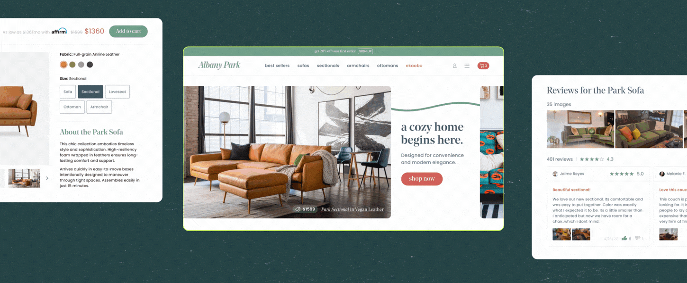
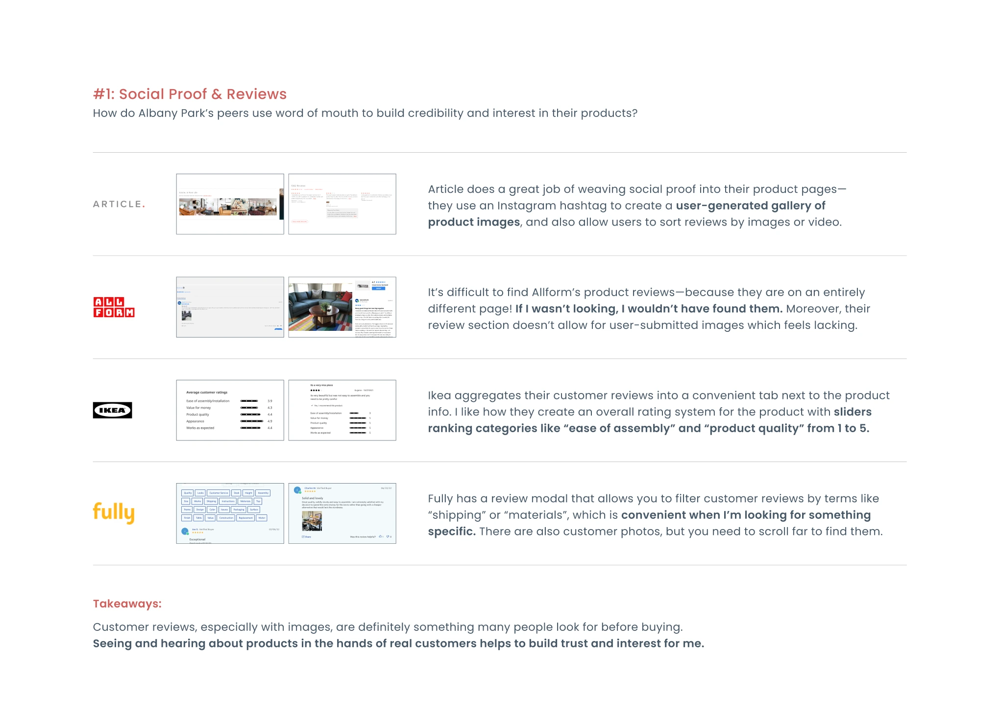
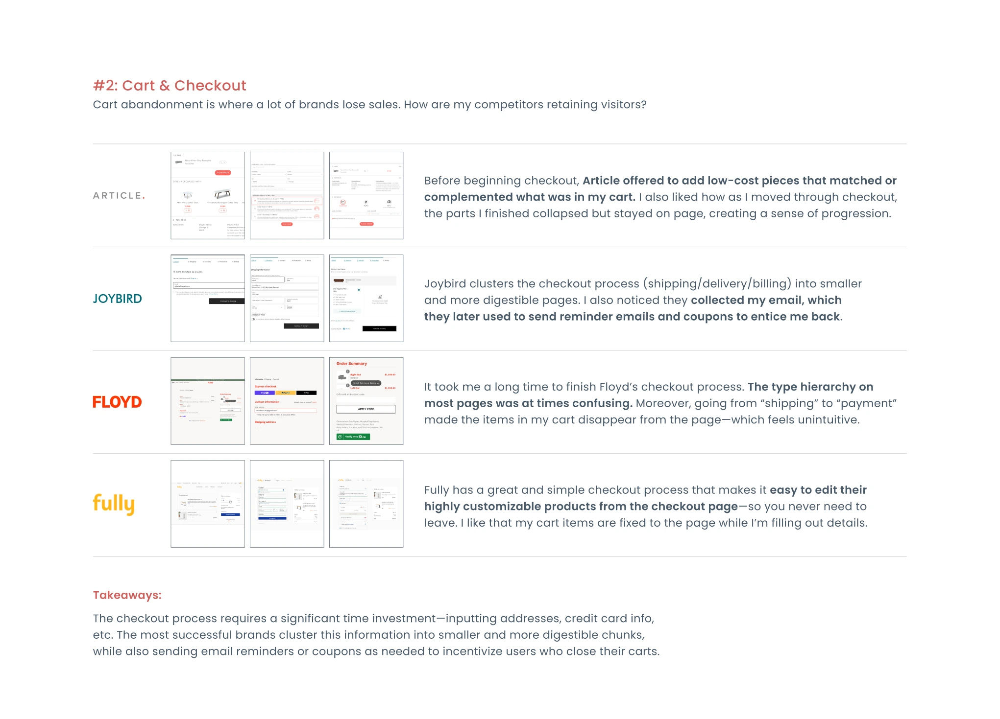

Albany Park

You
Hey! What’s this project about?
Chris Z
Albany Park is a pandemic success story. The brand's potent combination of trendy designs, affordable prices, and fast home delivery led to a surge in furniture sales.
To extend reach to new customers, the brand aimed to develop a modern e-commerce platform. I partnered with Albany Park to create a best-in-class user experience, and deliver the promise of convenient luxury to customers.

Competitive analysis
Building an e-commerce platform from scratch is a big deal! Before starting design, I looked into Albany Park's peers: seeing how similar brands achieved their goals differently. Specifically, I focused on ease-of-checkout and use of social proof.



Sales funnel
After reviewing what competitors were doing well (and what they weren’t) I set out to design the platform around a streamlined sales funnel, guiding customers while giving them all the information they needed to quickly move from cart to checkout.Specifically, I prioritized a quick and accessible flow to the checkout page, in addition to making social proof in the form of customer reviews (including images) more accessible than our competitors.
Mobile UX
I then began refining the mobile experience. Click the image below to see annotations!Landing page iterations
I developed a series of "cards" to provide the user with product details, reviews, and more. These modular wireframes allowed me to quickly build an effective landing page!


Checkout flow
I designed this flow to allow for easy progression from cart to payment, while also presenting relevant products/upsell opportunities on the way!
Takeaways
Online shoppers are smart! They know how to quickly sift through lots of information to find what they want. Crafting Albany Park’s customer UX was an exercise in simplifying to strengthen.
We provided easy access to the information customers need in order to make a decision, while identifying and removing potential bottlenecks.